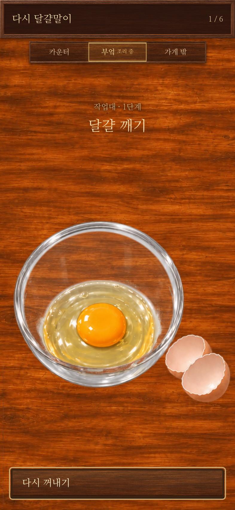
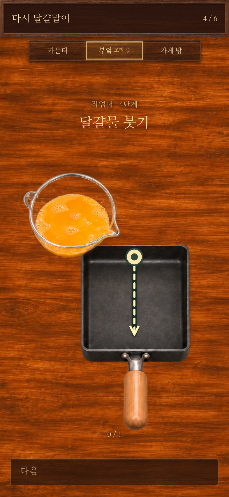

실제 게임의 글자와 배경을 유지한 확인용 화면입니다. 게임 본편에는 아직 적용하지 않았습니다.
쌀그릇처럼 배경이 비치게 조정.그릇 테두리·달걀·껍데기·위치는 유지.

팬 몸통 폭 약 30% 확대, 평행한 양옆.드래그 시작점과 끝을 모두 팬 내부로 이동.

밥통 선명도 보정, 겹치는 그릇은 앞에.주걱·손·배경은 유지.
사용자가 고른 왼쪽 아래 손잡이 시안.완성 요리의 실제 서빙 그릇을 비워 준비.
넓은 지름 유지, 몸통 깊이만 축소.가이드 시작점을 올리고 길이를 확장.